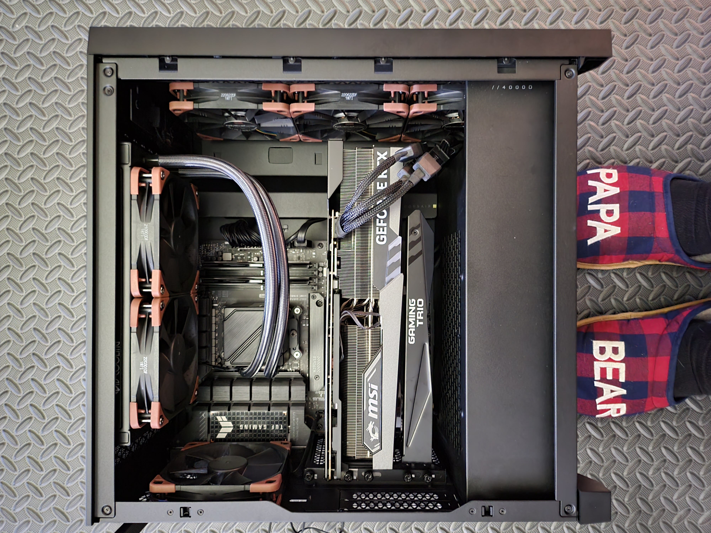
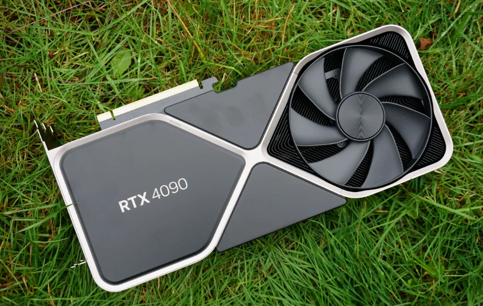

List of components in a PC
PCPartPicker.com (opens in new tab)
CPU
The CPU is the heart of your computer, handling all instructions it receives from hardware and software running on the PC. In FFXIV, a powerful CPU improves overall game performance, including faster loading times, smoother gameplay during complex scenes with many players or effects, and improved frame rates. Since FFXIV can be CPU-intensive, especially in crowded areas or during raids, a high-performance CPU will ensure a more responsive and enjoyable gaming experience.
Motherboard
The motherboard is the main circuit board that connects all components of your PC, allowing them to communicate with each other. While it doesn't directly affect gaming performance, choosing the right motherboard ensures compatibility with other high-performance components and future upgrades. Features like expansion slots, RAM capacity, and support for high-speed USB or storage interfaces can indirectly impact your FFXIV experience by supporting higher performance parts and faster data transfer rates.t
RAM
RAM is critical for multitasking and running complex applications smoothly. For FFXIV, having enough RAM is vital to ensure the game runs smoothly without stuttering, especially at higher settings or resolutions. More RAM allows for quicker access to game data, reducing load times and improving performance in scenarios where many assets need to be loaded quickly, like entering new areas or participating in large-scale battles.
SSD/HDD
SSDs offer much faster data access speeds compared to HDDs, which significantly reduces game loading times and the time it takes to load assets on the fly. For FFXIV, installing the game on an SSD can dramatically improve your gaming experience by reducing the load times when entering new zones, loading game resources, or starting the game itself. While HDDs can still be used, especially for storing larger files or games where speed isn't as critical, SSDs are highly recommended for your main game drive.
Power Supply
The power supply unit (PSU) doesn't directly affect the gaming performance but is crucial for providing stable and sufficient power to all your PC components. A high-quality, reliable PSU is essential, especially if you're running high-end components like a powerful CPU and GPU, to prevent power-related issues and ensure the longevity of your components.
Graphics Card
For FFXIV, the GPU is one of the most critical components for gaming performance. It handles rendering of the game's graphics, including textures, effects, and animations. A powerful graphics card will allow you to play FFXIV at higher resolutions and frame rates with better graphics settings, leading to a more visually stunning and immersive experience. While FFXIV is designed to be accessible on a wide range of systems, a dedicated GPU is recommended for the best performance, especially for playing at higher settings or resolutions.

Other add in cards
These include components like sound cards, network cards, or additional USB ports. While not essential for FFXIV, they can enhance your gaming experience by providing better sound quality, more stable internet connections, or additional connectivity options. However, most modern motherboards already include decent onboard audio and networking capabilities, making additional add-in cards optional for most gamers.